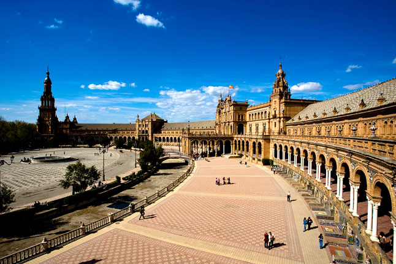
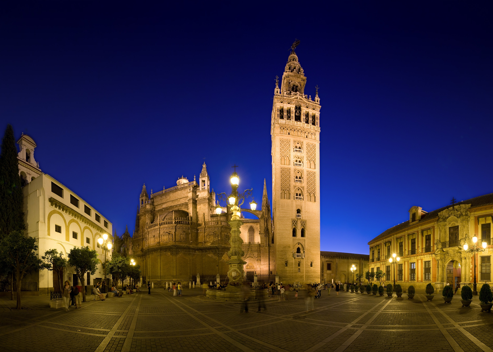
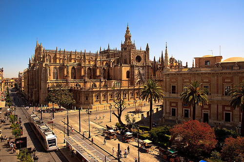
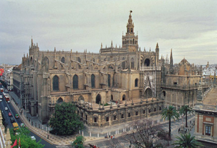
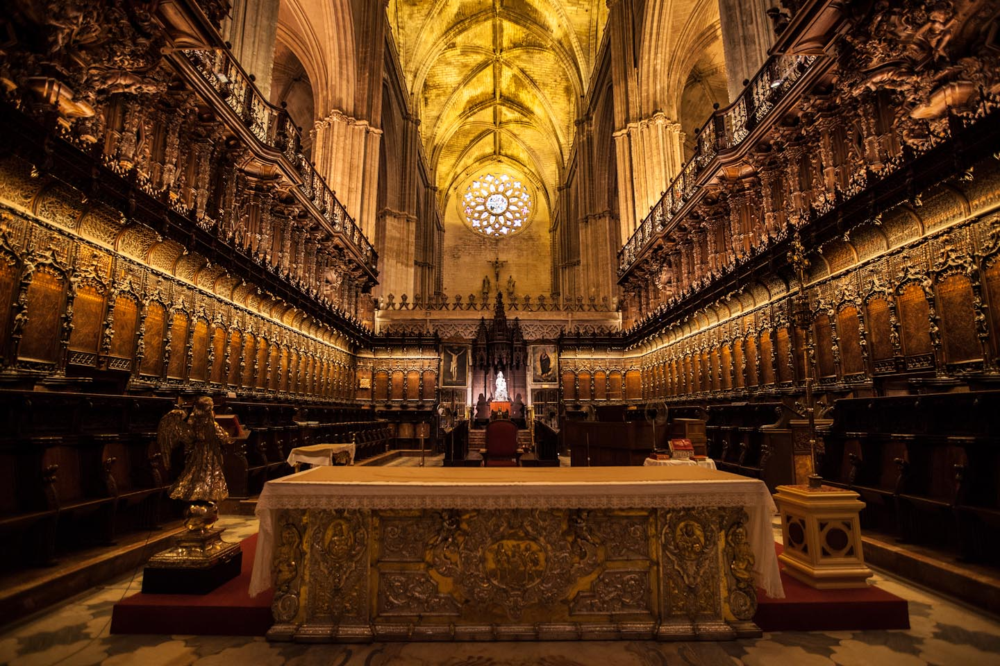
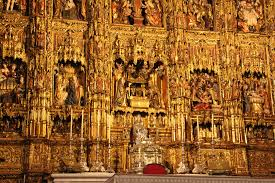

La Ciudad
Sevilla es la cuarta ciudad más grande de España con una población de 1,5 millones de personas. Sevilla es también la ciudad más caliente en España. Tiene una temperatura promedio de 35 grados centígrados. A lo largo de los siglos la ciudad ha sido gobernada por diferentes grupos. Comenzó con los romanos, entonces era independiente, entonces estaba bajo dominio musulmán, y finalmente cayó bajo el dominio cristiano.
  Arquitectura
Sevilla es el hogar de una de las catedrales más grandes del mundo Catedral de Santa María de la Sede también conocida como la catedral de Sevilla. Es la catedral gótica más grande del mundo y la tercera iglesia más grande.
  